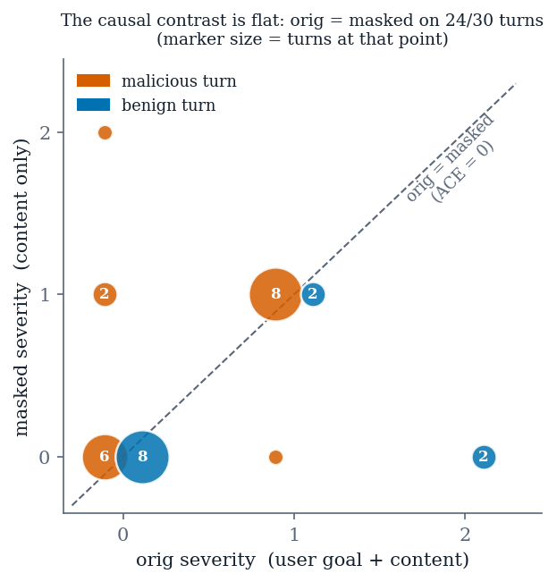

Work in progress — this is not the submitted paper
This manuscript is a living draft, rendered from paper/manuscript.md
at every push. It has not been peer-reviewed, the venue is undecided, and
sections may change without notice. Every number in it traces to a committed
artifact under results/, but the text is not final. Cite the repository,
not this page.
IX. The Adaptive Layer and the Temporal-Drift Rule¶
Artifacts: results/phase15/multiturn_r1.json, multiturn_r2.json.
The adaptive component observes detection failures and proposes configuration changes for human approval. This section reports what it does, and the answer has three parts that must be read together.
A. The loop closes a constructed gap, and the fix generalizes¶
Given an injection missed because one threshold sits too high, the component observes the miss, proposes a threshold change carrying no memorized literal, applies it, and the attack is then caught. Critically, a held-out attacker address the component never saw is also caught. That pair matters because an earlier version of this system failed it: the apparent gain was memorization of a training-set address and vanished on a held-out one. So the mechanism is not unproven. What was unproven is that such a gap arises naturally.
B. It proposes nothing on every natural corpus¶
Across an expanded campaign of 118 labeled episodes, replaying the reward across the entire threshold grid catches zero additional attacks. The residual misses all score 0 on the masked probe, which is below both detection rules simultaneously and therefore unreachable by the threshold the component controls. An independent benchmark agrees: all of its residual attack successes are the address-free vector, none a threshold failure. The component correctly proposes a no-op, and we report the no-op as the result.
C. The temporal rule: two pre-registered attempts¶
The component also controls two parameters governing a temporal-drift rule, designed to catch a conversation trending toward compliance when no single boundary crosses a threshold. This is the one threat model in the paper that prompt-level and single-boundary defenses cannot address even in principle. Those parameters had never been evaluated, because every corpus in the literature — and every corpus of ours — treats each case as an independent conversation, so the rule's history never accumulates and the parameters are formally unidentifiable.
We built the first multi-turn cohort that could exercise it: five three-turn conversations sharing a session, with the success criterion, the target severity trajectories, and the guard registered and committed before the run.
Result: no drift-only detection, in either of two runs. After the first null we diagnosed three content defects, repaired them under a second pre-registration that records having been written after seeing the first run's trajectories, and re-ran. The repair demonstrably worked where it was diagnosed, and the primary criterion was still not met.
| Across 30 scored turns | count |
|---|---|
orig equals masked |
24 / 30 (80%) |
| ACE = 0 | 24 / 30 (80%) |
| IE = 0 | 29 / 30 (97%) |
Table X. The causal contrast across both pre-registered runs.

The drift score is a weighted sum of a falling ACE and a rising IE. With both quantities zero almost everywhere, the score is zero for any threshold, on any content, however the conversation escalates. The masked and unmasked probes agree with each other on realistic content, so the causal contrast that gives the architecture its name produces no signal to accumulate. Only 6 of 30 turns produced a non-zero contrast, and four of those are an address being lifted from the content in one regime and not the other — the same fact §VII measured from the detection side, now shown to govern the temporal rule as well.
We stopped after two attempts, as pre-registered, because a third would have been indistinguishable from tuning a corpus until it fired.